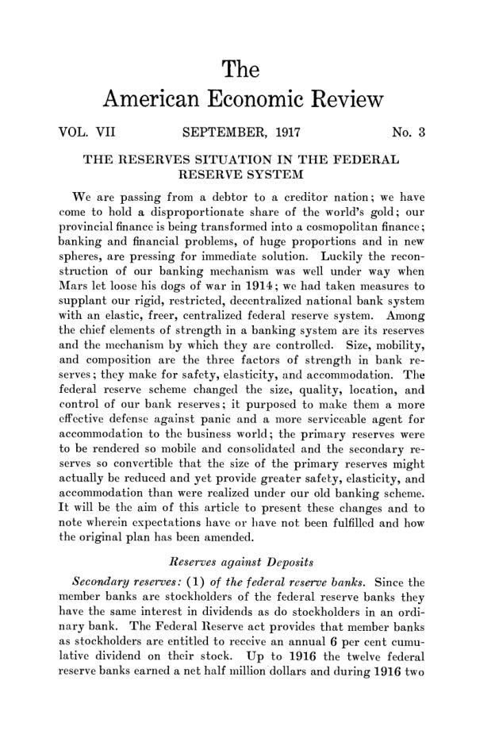

Westerfield e as reservas do Federal Reserve
Leitura: 8 min
Três anos depois de criado, o Federal Reserve já trocara boa parte de suas regras de reserva. Ray B. Westerfield mostra como dividendos, cheques em trânsito e notas emitidas contra ouro levaram à concentração das reservas.


Em 15 de junho de 1917, o balanço semanal do Federal Reserve mostrava US$ 528 milhões em notas entregues pelos agentes do sistema aos bancos de reserva, dos quais US$ 491 milhões em circulação. Como garantia, os agentes tinham só US$ 69 milhões em papel comercial redescontado. O resto era ouro.
O número resume o argumento de Ray B. Westerfield, da Yale University, no número de setembro de 1917 da American Economic Review. A lei de 1914 queria uma moeda elástica, que crescesse e encolhesse com os negócios, apoiada em reservas menores e mais móveis. Três anos depois, a prática e uma sequência de emendas tinham levado o sistema a outra direção: concentrar o ouro do país nos doze bancos de reserva.
O que se esperava das reservas?
Westerfield distingue três fatores de força numa reserva bancária: tamanho, mobilidade e composição. Juntos, dão segurança contra o pânico, elasticidade e capacidade de atender ao comércio. O plano do Federal Reserve mudava o tamanho, a qualidade, a localização e o controle das reservas. As reservas primárias seriam tão móveis e consolidadas, e as secundárias tão conversíveis, que o total poderia até diminuir com mais segurança do que no sistema dos bancos nacionais.
Quem paga a conta do sistema?
Os bancos membros são acionistas dos bancos de reserva e têm direito a dividendo cumulativo de 6% sobre o capital integralizado. Os ganhos não bastavam para pagá-lo. Até 1916, os doze bancos ganharam meio milhão de dólares líquidos; em 1916, 2,75 milhões. Na média, cerca de 3% ao ano nos dois primeiros anos e 5% no último, sobre capital integralizado médio de US$ 55 milhões. Em 1916, três bancos ganharam mais de 6%, oito mais de 5% e dez mais de 4%. Para o autor, o sistema foi até ali um ônus líquido para os membros.
Daí as propostas de reduzir ou abolir o capital dos bancos de reserva, que o Federal Reserve Board e a maioria do Conselho Consultivo derrotaram. O capital, diz Westerfield, serve a vários fins, entre eles financiar as operações de mercado aberto, pelas quais os bancos de reserva tornam efetiva a taxa de redesconto. No início de 1917, para absorver as importações de ouro, eles reduziram compras de aceites e venderam títulos do governo. Em dezembro de 1916, com o dinheiro apertado, os redescontos chegaram a US$ 38 milhões no dia 7, e compras no mercado aliviaram as taxas.
A baixa rentabilidade, insiste o autor, não é critério de utilidade: os bancos de reserva são dominados pelo interesse público e precisam manter ativos líquidos. Nos quatro primeiros meses de 1917, os ativos rentáveis somaram em média US$ 202,7 milhões, 22% dos recursos totais, e 61% deles eram papel comercial de primeira linha. O rendimento médio ficava perto de 3%.
Os bancos membros estavam mais líquidos?
Nem sempre. Em 30 de junho de 1916, os bancos que reportavam ao Comptroller tinham US$ 6.057 milhões em títulos de longo prazo, além de US$ 760 milhões em títulos federais. De junho de 1914 a junho de 1916, o capital e as reservas de lucros desses bancos cresceram 5,1%, e suas aplicações em ações e títulos não federais, 27,2%. Os depósitos cresciam mais depressa que os empréstimos, e os banqueiros buscavam onde aplicar.
Westerfield vê aí um deslocamento do crédito comercial para o mercado de capitais, que a finança de guerra tenderia a acelerar. Em novembro de 1916, o Board já recomendara cautela na compra de letras do Tesouro britânico renováveis por longo prazo, que perdiam o caráter de operações de curto prazo autoliquidáveis.
Por que concentrar as reservas?
A lei de 1914 substituiu os bancos das cidades de reserva pelos bancos de reserva como depositários e reduziu as exigências, sobretudo contra depósitos a prazo. Em setembro de 1916, o Congresso permitiu que os membros transferissem aos bancos de reserva a parte que antes ficava nos próprios cofres. Os bancos não atenderam. A lei de 21 de junho de 1917 tornou a transferência obrigatória: fixou só a porcentagem a manter no banco de reserva e deixou ao banco o dinheiro de caixa que julgasse conveniente.
O argumento a favor é de eficiência. Reunida em doze bancos, e não espalhada por 7.500, a reserva funciona como um fundo de seguro. Com o ouro acumulado durante a guerra, muitos temiam que boa parte tivesse de voltar à Europa. Seria menos danoso, diz o autor, que saísse dos bancos de reserva do que dos bancos membros.
O Board pediu também poder para elevar as reservas em até um quinto, por trinta dias, em situações extraordinárias. A comissão da Câmara rejeitou a proposta por votação apertada, e o Conselho Consultivo a considerou desnecessária. Westerfield lembra que o Board já podia suspender todas as exigências de reserva por trinta dias e defende a discrição dos especialistas:
“O sistema bancário é mais bem regulado pelo juízo de um corpo de especialistas do que pela lei.” (“banking is better regulated by judgment of a body of experts than by law”)
O que mudou com a compensação de cheques?
A principal queixa dos bancos do interior era a perda dos juros sobre a reserva antes depositada nos correspondentes. O sistema de compensação ao par, obrigatório desde 15 de julho de 1916, agravou a questão. No sistema antigo, o banco do interior recebia crédito imediato pelo cheque enviado ao correspondente, e esse crédito contava como reserva, embora o cheque levasse dias ou semanas para ser cobrado por rotas indiretas.
Para o autor, eliminar o float aumentou a qualidade, e portanto o tamanho efetivo, das reservas. Mas os membros não teriam recursos para manter a reserva no banco de reserva e, ao mesmo tempo, saldos nos correspondentes a 2% de juros. Por isso, diz ele, buscavam aplicações líquidas próprias, o que ajuda a explicar o crescimento dos títulos de longo prazo em suas carteiras.
A nota elástica ficou elástica?
Havia três notas: as antigas notas dos bancos nacionais, as notas dos bancos de reserva, que somaram US$ 12 milhões até o fim de 1916 sem acrescentar nada à circulação, e as notas do Federal Reserve. Estas seriam emitidas contra papel comercial redescontado, com 40% de ouro em reserva e fundo de resgate. Mas o papel vencido passou a ser liquidado sobretudo com ouro, e as notas ficavam em circulação.
O resultado, diz Westerfield, é que o volume de notas não acompanhava os negócios, as notas tomavam o lugar dos certificados-ouro na circulação, e a cobertura em ouro chegava a 90%. Cerca de US$ 460 milhões em ouro saíram da circulação para as mãos dos agentes.
“As notas do Federal Reserve são praticamente o mesmo que certificados-ouro.” (“the federal reserve notes are practically the same as gold certificates”)
O National City Bank de Nova York fez campanha para que os bancos de reserva emitissem notas diretamente contra ouro e o guardassem nos próprios cofres, onde, com reserva de 40%, cada dólar de ouro sustentaria duas vezes e meia seu valor em notas. A comissão da Câmara rejeitou a ideia em janeiro; em junho, sob a pressão da guerra, o Congresso a aprovou. Westerfield rebate as objeções: a emissão contra ouro já ocorria por via indireta.
Na minha leitura
Na minha leitura, o artigo registra uma mudança de concepção que o próprio autor nomeia: a reserva do banco membro passou a ser o seu crédito no banco de reserva. O desenho de 1914, com reservas divididas entre cofre próprio e banco central e uma nota atada ao papel comercial, cedeu a um sistema de reservas centralizadas e moeda lastreada em ouro concentrado.
O texto mostra também a tensão entre rentabilidade e liquidez num banco central com acionistas privados, e a preferência do autor pela discrição de especialistas sobre regras fixadas em lei. As duas questões, quem paga pelo banco central e quanto ele pode decidir sem o legislador, atravessam toda a história posterior da instituição.
Glossário
- Reserva primária
- dinheiro em caixa ou depósito no banco central, disponível de imediato.
- Reserva secundária
- ativos de alta liquidez, como papel comercial de curto prazo, convertíveis em dinheiro sem perda.
- Aceite bancário
- letra de câmbio cujo pagamento um banco garante, negociável no mercado de desconto.
- Certificado-ouro
- papel-moeda do Tesouro americano conversível em ouro depositado.
- Float
- valor dos cheques em trânsito, já creditados mas ainda não cobrados.
- Compensação ao par
- cobrança de cheques pelo valor de face, sem desconto de taxa de câmbio entre praças.
Fontes
- The Reserves Situation in the Federal Reserve System — Ray B. Westerfield (Yale University) (pp. 509–529). JSTOR · Internet Archive (PDF)
- Edição completa, com os demais artigos: Nº 148 do Arquivo.
Documento em domínio público (EUA, publicado antes de 1931), via JSTOR Early Journal Content e Internet Archive. Resumo e comentário do autor deste site, sem afiliação com a American Economic Association. Encontrou um erro? Escreva: a correção é publicada no próprio texto, com data.
↑ Nº 148 · As reservas do Federal Reserve, a escala de Fall River e o Pacífico Howard e a escala móvel de Fall River →